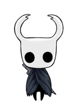
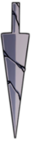

O Cavaleiro:
O personagem que o jogador controla durante a campanha principal de Hollow Knight.
O Cavaleiro é um Receptáculo nascido dos seres superiores: Rei Pálido e Dama Branca, com Vazio dentro de sua carapaça. Receptáculos são apresentados como descendentes e prole do Rei e da Rainha de Hallownest; começando suas vidas em ovos que são encontrados em uma área do Abismo conhecida como Local de Nascimento.
Através de todas as referências e eventos dentro do jogo, o Cavaleiro nunca é referido com um gênero. Isso é deliberado, já que Receptáculos são seres sem gênero. Esse fato é evidenciado mais ainda por Hornet ser chamada de "Descendente Feminina" tanto pela Dama Branca quanto a Parteira; deixando ela como a única descendente do Rei Pálido a ter gênero.
Na cutscene do Local de Nascimento, é mostrado que o Cavaleiro caiu de volta no Abismo depois que ele foi selado. No entanto, no começo do jogo, ele pode ser visto vagando pelos Penhascos Uivantes depois de ser chamado de volta à Hallownest pela Radiância ou pelo Cavaleiro Vazio. Também é desconhecido como ele conseguiu escapar do Abismo.
Hornet fala na Cidade das Lágrimas que a resistência do Cavaleiro é fruto de dois vazios; um sendo o Vazio que o Cavaleiro tem dentro de si, e o outro vazio sendo a área fora de Hallownest. Essa área é referida como um vazio por uma tabuleta de história encontrada nos Penhascos Uivantes. Passar tempo nessa área fez com que o Cavaleiro perdesse suas memórias, como é sugerido pela descrição da conquista Vazio.
Uma vez que o Cavaleiro obtém o Coração Vazio e lembra de seu passado, ele é capaz de unificar o Vazio sob sua vontade. É mencionado por Hornet que ele adquiriu essa habilidade ao aceitar o Vazio dentro de si mesmo. A criatura na área em que o Manto Sombrio é encontrado tem um diálogo de Ferrão dos Sonhos, supostamente mencionando o Cavaleiro como o Senhor das Sombras depois que ele ganha o Coração Vazio.
No começo do jogo, o Cavaleiro vem apenas equipado com seu Ferrão Velho e a habilidade de se curar usando ALMA. Ao longo do jogo, o Cavaleiro ganha acesso a novos poderes e itens para o ajudarem em sua jornada.
Vida e Alma:
vida:
Vida é representada em máscaras, mostradas no canto superior esquerdo da tela. O Cavaleiro começa o jogo com 5 máscaras, e pode obter mais coletando Fragmentos de Máscara. 4 Fragmentos de Máscara fazem uma nova máscara de vida, até um máximo de 9 máscaras. Vida é perdida ao levar dano, tanto por inimigos ou por perigos do ambiente. Vida pode ser recuperada ao descansar em um Banco ou usando Foco.Máscaras de Sangue Vital, concedidas pelas Sementes da Vida e por certos Amuletos, são máscaras temporárias que não podem ser restauradas usando Foco. Máscaras de Sangue Vital extraídas de Sementes da Vida não serão regeneradas ao descansar em um banco, enquanto que as que derivam de Amuletos serão restauradas.
Alma:
ALMA é representada como uma máscara circular à esquerda da vida. ALMA é usada para conjurar Magias, bem como curar a vida usando Foco. Atacar inimigos com o Ferrão é a principal fonte para recuperar ALMA, embora outras ferramentas e objetos também concedam ALMA.Ferrão:

A arma principal do Cavaleiro, capaz de atacar em qualquer direção.Se propulsionar com o Ferrão, ou bater em um inimigo ou espinho enquanto no ar, é uma ferramenta útil para atravessar Hallownest. O Cavaleiro pode aprimorar aprimorá-lo para ataques mais fortes, bem como aprender ataques carregados chamados Artes do Ferrão dos Mestres do Ferrão.
Amuletos:

Magias:
Habilidades: